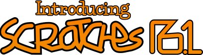
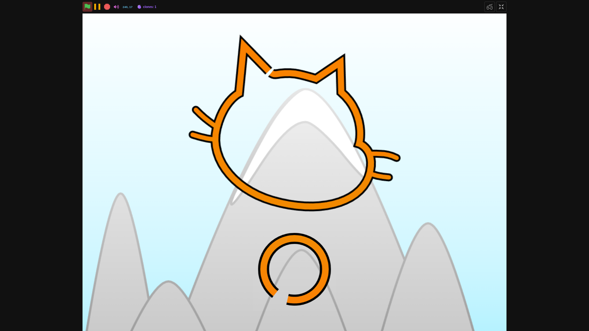
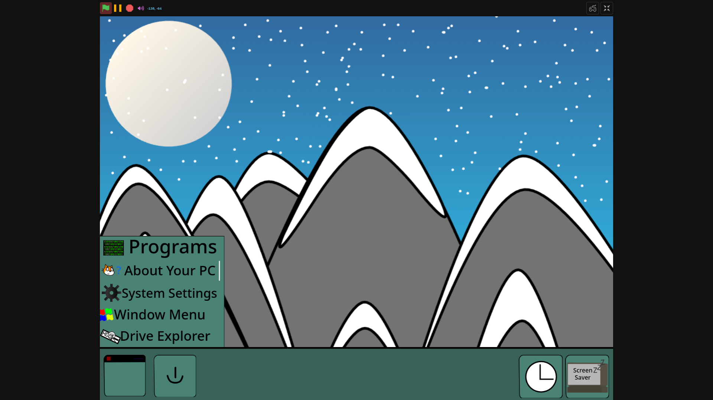
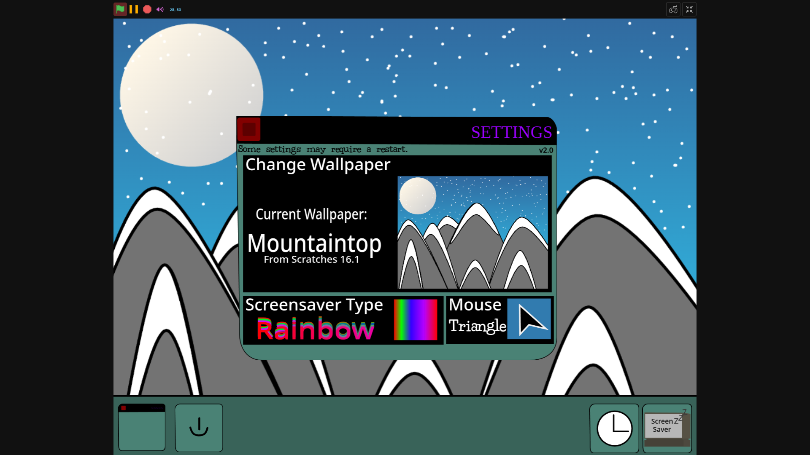
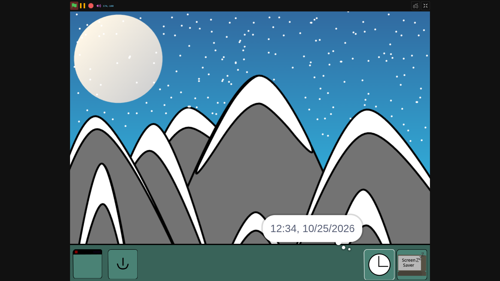

Greetings!!!
While Scratches Cantaloupe continues development,
I felt that High Mountain needed a touch up.
So, I have started developing a 'bridge' release of sorts.
This version will improve upon 16 with some bug fixes and
a few neat features! Not much information can be given, but I will
say that a few features have been removed, due to mainly being broken.
This was quite a short one, as 16.1 is a minor release, but there will be
more newsletters soon!
Infact.. one should be coming within the year.
But anyways that's it for this newsletter. See you later!
(Oh, and have these 16.1 screenshots!)



